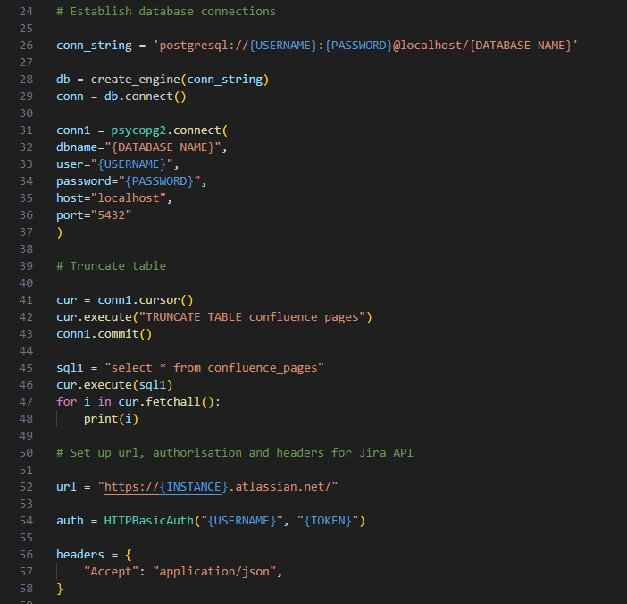

Work Projects
Jira/Confluence Data
Description
This project was to obtain all the IT Service Desk projects tickets via the Jira API and write the data to a Postgres database. A part of this was also obtaining and writing to the database as separate tables for 'Users, Confluence Spaces and Confluence Pages'. With all this data, I was able to build reports and dashboards in Power BI, as well as providing each Confluence page author with a list of their pages for review.
Skills utilised
- Python
- Pandas Library
- Data Transformation
- SQL
